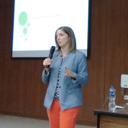

Los retos en el combate a la corrupción

Lourdes Morales Canales
Es Doctora en Ciencia Política por la Universidad de La Sorbonne París III. Obtuvo su maestría en Comunicación Política en la Universidad de París I y la Licenciatura en Comunicación en la Universidad Iberoamericana. Fue Directora de Alianza Cívica, de Mexicobserva y participó en el Foro Ciudadano de Oaxaca.
Es profesora asociada del Centro de Investigación y Docencia Económicas (CIDE) donde actualmente dirige la Red por la Rendición de Cuentas. Cuenta con más de 10 años de experiencia docente en instituciones de educación superior públicas y privadas.
Ha coordinado investigaciones sobre participación ciudadana, procesos electorales en regiones indígenas con enfoque de género, transparencia y rendición de cuentas. Es coautora y autora de artículos y libros vinculados a esos temas.